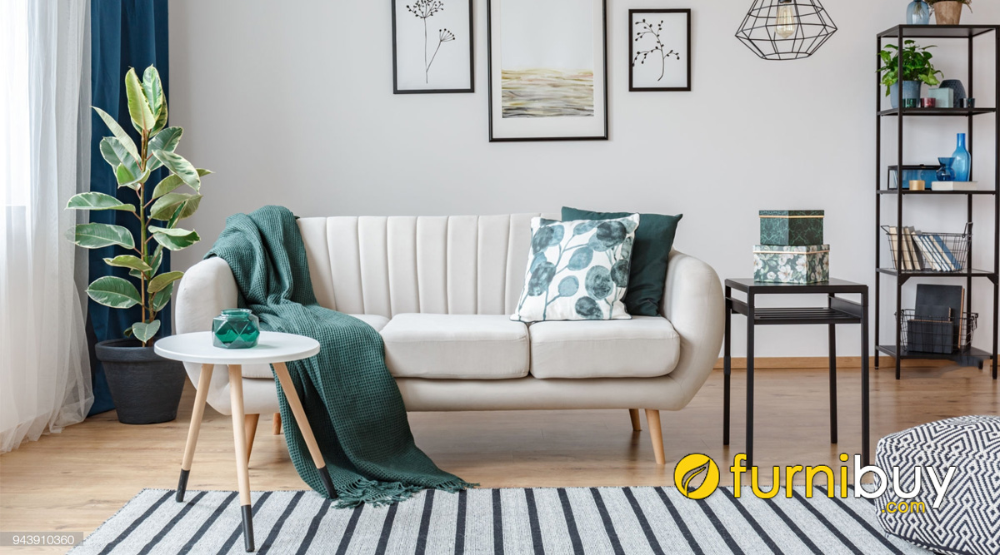
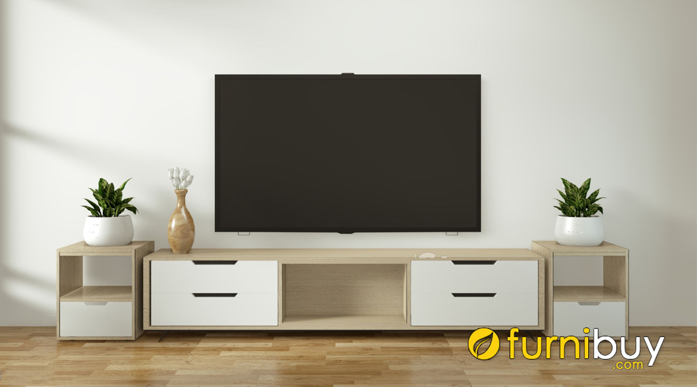
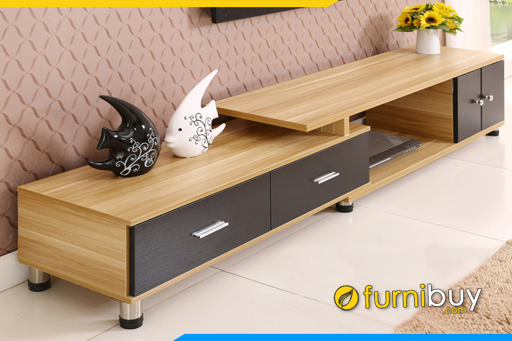

“Chọn một chiếc ghế sofa phòng khách chính là sự đầu tư lâu dài, giống như lựa chọn người bạn đời của mình vậy”. Câu nói này đã thể hiện được vai trò to lớn của bộ bàn ghế sofa trong nội thất gia đình nói chung và nội thất phòng khách nói riêng.
Trở về nhà sau một ngày dài bận rộn, chắc hẳn bạn sẽ chỉ muốn ngả mình trên chiếc sofa nệm êm ái ngay tại phòng khách. Hay mỗi khi có khách đến chơi nhà, bạn sẽ tiếp đón họ trên một bộ ghế sofa sang trọng. Bạn thấy đấy, sofa chính là món đồ bạn cần có nhất trong nhà, cần được lên danh sách đầu tiên khi mua sắm nội thất gia đình. Không gian phòng khách của bạn cũng sẽ thêm hoàn hảo với mẫu bàn trà có thiết kế thanh lịch, trang nhã. Bạn có thể trang trí với một vài cuốn sách, chậu cây xanh hoặc lọ hoa đơn giản. Đây không chỉ là một món đồ dùng hàng ngày tiện dụng mà còn là một phần trang trí cho ngôi nhà mà không cần quá cầu kỳ chi tiết.
Vai trò của kệ tivi trong phòng khách ngoài việc để kê tivi thì còn có giá trị thẩm mỹ rất lớn. Nếu như trước kia kệ tivi mục đích chính là để kê tivi cho vững chãi, thì ngày nay những chiếc tivi màn hình tinh thể lỏng siêu mỏng nhẹ dễ dàng gắn được lên tường. Từ đó kệ tivi đóng vai trò trang trí – kệ tivi decor giúp những bức tường trống trải trở nên đẹp mắt. Đặc biệt, một chiếc kệ tivi phù hợp còn là sợi dây kết nối hài hòa hơn với bộ sofa bàn trà trong phòng khách. Hoặc bạn có thể dùng để lưu trữ những phụ kiện của tivi, các thiết bị hỗ trợ tivi như đầu thu, âm li (amply), loa, điều khiển, đầu quay v.v…
Hiện nay, trên thị trường kệ tủ tivi vô cùng đa dạng. Từ những mẫu kệ gỗ truyền thống kê sát đất đến những chiếc kệ đóng tường rất hiện đại. Tủ tivi thông minh kéo dài 2 đầu với những ngăn kéo rộng, hay những thiết kế kệ tivi gắn liền với tủ rượu, tủ sách, kệ tivi âm tường độc đáo,…Ngoài ra, chất liệu cho kệ tivi hiện đại cũng phong phú không kém. Bạn có thể lựa chọn các mẫu gỗ công nghiệp hay gỗ tự nhiên bền chắc, kệ tivi bằng kính mặt đá cực kỳ sang trọng.
Kệ tivi làm bằng gỗ MDF
Truy cập vào đây để xem danh mục đồ nột thất nhiều hơn!!